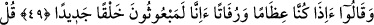
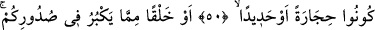
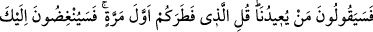
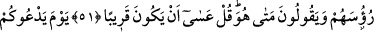
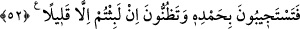

İSTER TAŞ OLUN
İSTER DEMİR
DİRİLTİLECEKSİNİZ
49. Bir de onlar dediler ki: Sahi biz, bir kemik yığını ve kokuşmuş bir toprak
olmuş iken, yepyeni bir yaratılışta diriltileceğiz, öyle mi!
50. De ki: “İster taş olun, ister demir”,
51. İsterse aklınıza (yeniden dirilmesi) imkânsız gibi görünen herhangi bir
yaratık! (Bunlar, Allah’ın sizi yeniden diriltmesini güçleştirmez.) Diyecekler ki:
“Bizi tekrar (hayata) kim döndürecek?” De ki: “Sizi ilk kez yaratan.” Sana alaylı
alaylı başlarını sallayacaklar ve “O ne zaman?” diyecekler. De ki: “Yakın olsa
gerek!”
52. Allah sizi çağıracağı gün, kendisine hamd ederek çağrısına uyarsınız ve
(dirilmeden önceki hâlinizde) çok az kaldığınızı sanırsınız.
“Bir de onlar” Öldükten sonra dirilmeyi inkâr eden Mekke’li kâfirler başlangıçta
topraktan yaratıldıklarını, yaradılışlarını unuttular. Oysa onlar Allah Teâlâ’nın: “Sen
hiçbir şey değilken (yokken) seni yarattım.” (Meryem, 19/9) buyurduğu gibi yoktan
var edildiler. Kâfirler bütün bunları unuttular da inkâr ederek ve gerçekleşmesini
imkânsız bularak “dediler ki: “Sahi biz,” acaba ölümden sonra aradan zaman geçince
“bir kemik yığını ve kokuşmuş bir toprak olmuş iken, yepyeni bir yaratılışta
diriltileceğiz, öyle mi!” yâni, öldükten sonra hayatımız imkânsızdır. Çünkü canlının
tazeliği, yumuşaklığı ve kemiğin çürümesi birbirine zıt şeylerdir.
Kâfirlerin sözünün âyette zikredilen vakit ile kayıtlanması, onların inkârı o vakte
mahsus olduğu için değildir. Çünkü onlar beden aynı şekilde çürümeden kalsa da
öldükten sonra dirilmeyi inkâr etmektedirler. Bilakis bu vaktin zikredilmesi dirilmeye
aykırı olan bir duruma yönlendirerek onların dirilmeyi inkârlarını kuvvetlendirmek
içindir.